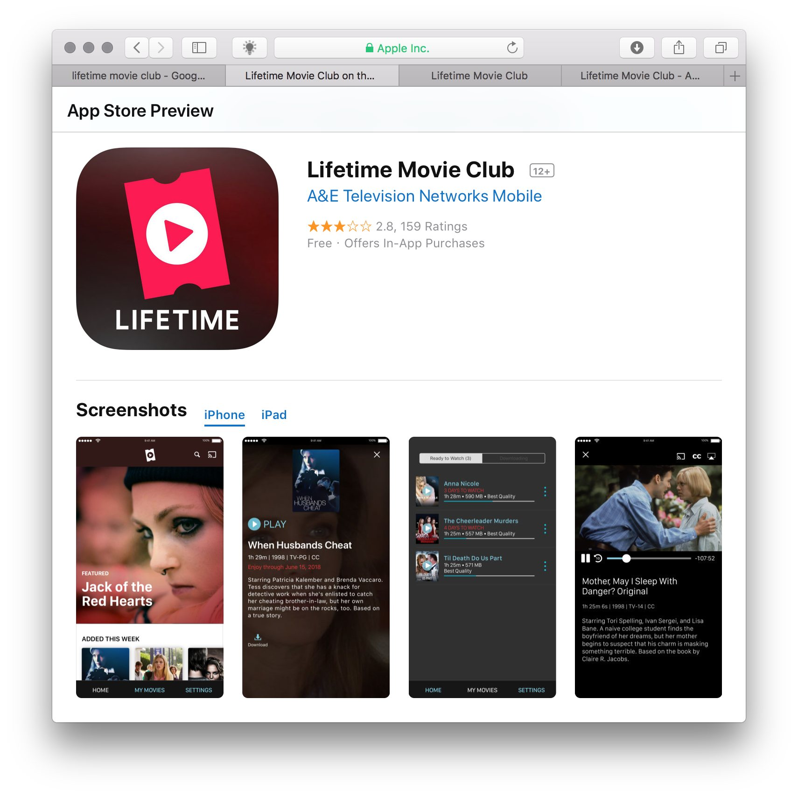

History Vault and Lifetime Movie Club
A broadcast network's first subscription streaming apps. I ran delivery for History Vault and Lifetime Movie Club across web, iOS, tvOS, Android and Roku.
Program deliveryProduct
2subscription apps: History Vault and Lifetime Movie Club
5platforms: web, iOS, tvOS, Android, Roku
10workstreams at once
4countries: US, India, Poland, Egypt
The problem
- A traditional broadcast organization moving into direct-to-consumer streaming.
- Two products on one team: History Vault and Lifetime Movie Club.
- Launch windows tied to Facebook ad buys and email campaigns, so dates had to hold.
What I did
- Set up Scrum, the tooling and the delivery rhythm from the ground up.
- Moved the teams from Post-it notes to a fully set-up Jira project.
- Coached the product owner on stories with acceptance criteria, sized to one sprint.
- Ran the Scrum of Scrums and release planning across all ten workstreams.
- Guided Panthera and Chromecast across every platform at once.
- Found gaps in customer service and shipped the fixes.
What changed
- Web, iOS, tvOS, Android and Roku shipped together.
- Marketing, content and product got launch windows they could plan on.
- The department grew its own facilitators: product owners, Scrum Masters and release engineers.
